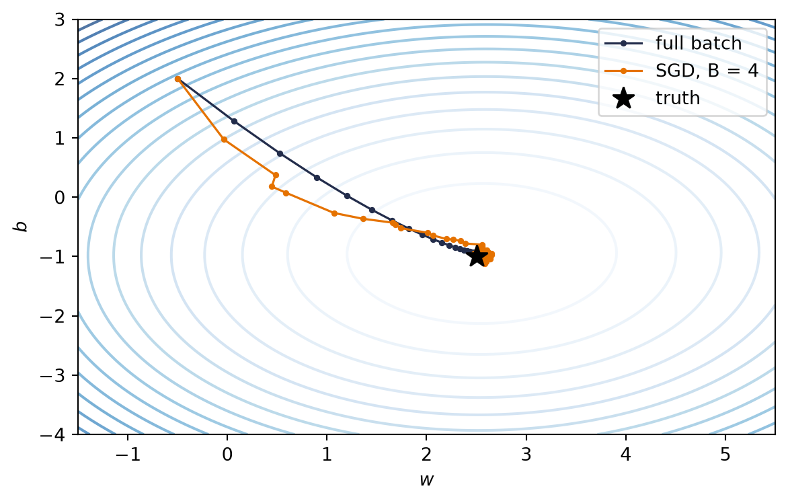
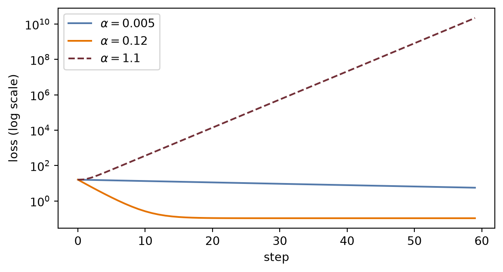
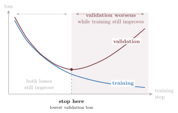

We now have models worth training: linear regressors (Chapter 1), classifiers (Chapter 2), and multilayer perceptrons (Chapter 3). We have losses that tell each of them how bad they are, and we know the direction of improvement is the negative gradient. What remains is the question every practitioner faces daily: how, exactly, do you run the descent when the dataset has a million examples, the model has millions of knobs, and the loss landscape is no longer a friendly bowl?
This chapter is about the workhorse answer, stochastic gradient descent, and the small set of refinements (learning rates, batch sizes, momentum, Adam) that turn it from a theoretical idea into the algorithm that trains essentially everything in this book.
4.1 Where losses come from, one more time
Before optimizing a loss, remember why it is that loss. In Chapter 1 we saw that assuming Gaussian noise on a linear process makes maximum likelihood collapse into least squares; in Chapter 2 the same argument with a categorical distribution produced cross-entropy. This is the general pattern: a loss function is a noise model in disguise. Choose how you believe the data deviates from your model, and maximum likelihood hands you the loss. The loss is how we tell the model it is doing badly \(\rightarrow\) choosing it well is not a detail, it is the supervision itself.
Look at the cost. One step touches every example; modern datasets have millions to billions of them, modern models have millions to billions of parameters, and training needs thousands of steps. One exact gradient per step is a luxury we cannot afford \(\rightarrow\) we need to change strategy to scale up.
4.3 Stochastic gradient descent
The idea is almost cheeky: we do not need the exact gradient. A good approximation is enough. Instead of the expensive sum over all \(n\) examples, average over a small random mini-batch\(\mathcal{B}\) — think 32 examples against a million:
Why does this work? Because the mini-batch gradient is unbiased: if each example is sampled uniformly, the expected contribution of example \(i\) to a batch equals its contribution to the full average, so
In expectation, the cheap step points exactly where the expensive step would have pointed. Each step is noisy; on average, the walk is right.
In practice the algorithm is:
Shuffle the training data.
Split it into mini-batches of size \(B\).
For each batch: compute the average gradient, update the parameters.
One pass through all batches is an epoch; repeat for multiple epochs.
NoteHonest fine print
The unbiasedness proof assumes sampling with replacement. The algorithm above samples without replacement (shuffle, then walk the batches), for practical reasons: we want to visit every example and spread the contributions evenly. That mismatch breaks the simple proof, and making the theory rigorous for shuffled SGD is an active area of research. Keep the caveat in mind; keep using the shuffle.
4.4 The two zones of SGD
The noise gives SGD a characteristic two-phase behavior, and it is worth seeing rather than just hearing about. Far from the optimum, almost any batch tells you roughly the same thing \(\rightarrow\) rapid, consistent progress. Close to the optimum, different batches start to disagree (“go left” — “no, go right”), and the iterate bounces around in what we will call the region of confusion:
Code: GD vs. SGD paths
import torchimport numpy as npimport matplotlib.pyplot as plttorch.manual_seed(6050)x1 = torch.randn(80)y1 =2.5* x1 -1.0+0.4* torch.randn(80)def descend(batch: int|None, lr: float=0.12, steps: int=60): w, b, path = torch.tensor(-0.5), torch.tensor(2.0), []for _ inrange(steps): idx = torch.randperm(80)[:batch] if batch elseslice(None) err = (w * x1[idx] + b) - y1[idx] path.append((float(w), float(b))) w = w - lr *2* (err * x1[idx]).mean() b = b - lr *2* err.mean()return np.array(path)W, B = np.meshgrid(np.linspace(-1.5, 5.5, 90), np.linspace(-4, 3, 90))L = ((y1.numpy()[None, None, :] - (W[..., None] * x1.numpy() + B[..., None])) **2).mean(-1)plt.figure(figsize=(6.2, 4))plt.contour(W, B, L, levels=25, cmap="Blues", alpha=0.7)for batch, color, label in [(None, "#232D4B", "full batch"), (4, "#E57200", "SGD, B = 4")]: p = descend(batch) plt.plot(p[:, 0], p[:, 1], "o-", ms=2.5, lw=1.2, color=color, label=label)plt.plot(2.5, -1.0, "k*", ms=13, label="truth")plt.xlabel("$w$"); plt.ylabel("$b$"); plt.legend(loc="upper right")plt.tight_layout(); plt.show()

Figure 4.1: Full-batch descent (blue) against mini-batch SGD (orange, \(B = 4\)) on the same landscape. Far out, the noisy steps agree with the true direction; near the optimum they scatter — the region of confusion.
Here is the surprise: the bouncing is not merely tolerable, it is often a feature. Loss landscapes of real networks are full of shallow traps, and a noisy step can hop out of a poor local minimum that would permanently capture exact gradient descent. The same jitter discourages the model from settling too perfectly into any one configuration of the training set; solutions found under noise tend to generalize better. We will give that observation its proper treatment in Chapter 6; for now, respect the noise. It is doing work for you.
4.5 The learning rate
One knob dominates all others. The learning rate \(\alpha\) scales every step, and its failure modes are asymmetric: too small wastes your compute budget crawling; too large overshoots the valley and diverges.
Code: the learning-rate triptych
def losses_for(lr: float, steps: int=60): w, b, out = torch.tensor(-0.5), torch.tensor(2.0), []for _ inrange(steps): err = (w * x1 + b) - y1 out.append(float((err **2).mean())) w = w - lr *2* (err * x1).mean() b = b - lr *2* err.mean()return outplt.figure(figsize=(6.2, 3.4))for lr, style, color in [(0.005, "-", "#5379AA"), (0.12, "-", "#E57200"), (1.1, "--", "#722F37")]: plt.semilogy(losses_for(lr), style, color=color, label=f"$\\alpha = {lr}$")plt.xlabel("step"); plt.ylabel("loss (log scale)")plt.legend(); plt.tight_layout(); plt.show()

Figure 4.2: Same problem, same steps, three learning rates. Too small crawls; too large overshoots back and forth and climbs; the middle one converges quickly.
TipRule of thumb from the lectures
Start around \(\alpha = 0.1\) and adjust based on what the training curves tell you: crawling \(\rightarrow\) raise it; oscillating or exploding \(\rightarrow\) lower it. Later in training it often pays to decay the learning rate so the fine-tuning steps get smaller — that is a learning-rate schedule. One exotic-sounding relative, warmup (starting tiny and ramping up), will matter enormously when we train Transformers in Chapter 14.
4.6 The batch size
The batch size \(B\) sets where you live on the noise–efficiency trade-off:
Batch size
Character
Trade-off
Small (1–32)
Noisy, exploratory
Better generalization; slow, underuses the GPU
Medium (32–256)
Balanced
The usual default; hardware-efficient
Large (256+)
Smooth, fast per epoch
Less exploration; can miss better minima and overfit
The noise level scales like \(1/\sqrt{B}\): quadrupling the batch only halves the jitter. There is no free lunch here, only a dial — and the medium setting is the default for a reason.
4.7 Momentum: give the ball some mass
Vanilla SGD has exactly one control, \(\alpha\), and in narrow, curved valleys that is not enough: the iterate zigzags across the steep direction while inching along the shallow one. The fix is to give the update a memory. Keep a running velocity that accumulates gradients, and move along the velocity instead of the raw gradient:
with \(\beta \in [0.9, 0.99]\). This is the ball rolling downhill: in directions where gradients keep agreeing, speed builds; in directions where they flip sign every step, they cancel. The zigzag damps itself, and small bumps in the landscape get rolled through rather than obeyed.
4.8 Adam: adaptive steps per knob
Momentum treats every parameter alike, but some knobs sit on steep cliffs while others sit on plains. Adam (adaptive moment estimation) combines three ideas from the lecture: momentum (accumulate past gradients), per-parameter adaptive learning rates (scale each knob’s step by its own gradient history), and bias correction (account for both accumulators starting at zero). Formally, with elementwise operations:
where \(\hat{\vect{m}}, \hat{\vect{s}}\) are the bias-corrected accumulators. When to use what, per the lecture: SGD with momentum is simple, reliable, and strong for large models; Adam is the good default that works out of the box.
4.9 The race, on a problem where we know the truth
Claims about optimizers deserve a test you can rerun. We build a least-squares problem with a deliberately ill-conditioned landscape — the second feature is ten times the scale of the first, so the loss surface is a long narrow valley — and race the three optimizers with the same budget:
Figure 4.3: The optimizer race on an ill-conditioned valley (feature scales 1 and 10). At the shared learning rate, plain SGD zigzags across the steep direction and crawls along the shallow one; momentum cancels the zigzag; Adam’s per-parameter scaling neutralizes the conditioning almost entirely.
Read the result honestly. This is one problem, chosen to expose conditioning; it is not proof that Adam always wins (it does not — plain SGD with momentum, well tuned, still trains many of the best vision models). What the race does show is mechanism: when different directions of the landscape have wildly different steepness, per-direction memory (momentum) and per-parameter scaling (Adam) buy you orders of magnitude. It also whispers a practical lesson from the live session: much of this valley’s narrowness came from unscaled features \(\rightarrow\)normalize your inputs and you fight the optimizer less (Exercise 5).
4.10 Two regularizers that live inside training
Two ideas from Chapter 1 reappear here as training-loop citizens rather than loss-function algebra.
Weight decay. Ridge’s \(L_2\) penalty, seen from the optimizer’s side, is one extra term in the update: shrink every weight slightly toward zero each step (\(\vect{w} \leftarrow (1 - \alpha\lambda)\vect{w} - \alpha\nabla\loss\)). That is why every PyTorch optimizer takes a weight_decay argument — it is the same knob you met as ridge, now applied to any model, and you will see it in nearly every training recipe in this book.
Early stopping. Track the validation loss during training and stop when it turns upward, even though the training loss is still falling:

Figure 4.4: Training error keeps falling; validation error turns. Stopping at the turn is regularization by clock — no penalty term required.
Both are cheap, both are everywhere, and both are previews: the full story of why constraining training improves generalization is the business of Chapter 6.
4.11 Okay, so — the training loop
Assemble the chapter into the loop you will run, in some form, for the rest of the book:
Start from (well-initialized) random parameters.
For each epoch: shuffle, split into mini-batches of size \(B\).
For each batch: forward pass \(\rightarrow\) loss (your noise model in disguise) \(\rightarrow\) backward pass for the gradients \(\rightarrow\) optimizer step (\(\alpha\), momentum or Adam, weight decay).
Watch the validation curve; schedule the learning rate; stop early when it turns.
One box in that loop is still magic: “backward pass for the gradients.” Computing millions of partial derivatives at the cost of roughly one extra forward pass is the subject of Chapter 5.
Exercises
(Pencil.) Prove Equation 4.4 for sampling with replacement: if \(i\) is drawn uniformly from \(\{1,\dots,n\}\), show \(\E[\nabla \ell_i(\vect{w})] = \frac{1}{n}\sum_j \nabla \ell_j(\vect{w})\). Where exactly does the argument use uniformity?
(Code.) In the two-zones figure, sweep \(B \in \{1, 4, 16, 80\}\) and plot the final 30 steps of each path. How does the radius of the region of confusion scale with \(B\)? Compare against the \(1/\sqrt{B}\) rule.
(Code.) Add a learning-rate schedule to the race: halve \(\alpha\) every 30 steps for plain SGD. How much of the gap to momentum does scheduling close? What does that tell you about what momentum is really fixing here?
(Code.) Sweep momentum’s \(\beta \in \{0, 0.5, 0.9, 0.99\}\) in the race. Explain the failure mode at the top end using the ball analogy.
(Code.) Standardize the race’s features (divide each column of Xr by its standard deviation) and rerun all three optimizers. How much of Adam’s advantage evaporates? State the practical moral in one sentence.